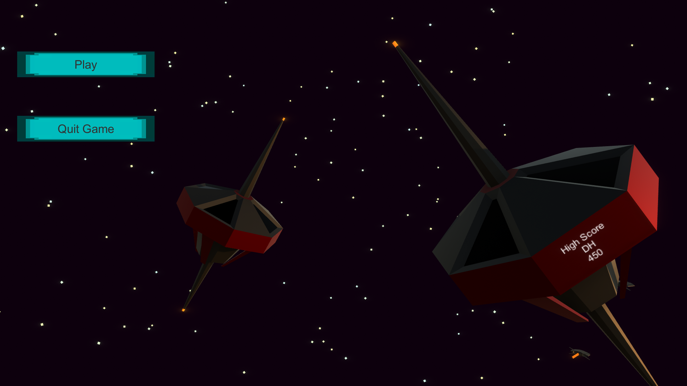

The player can see the highest score and the name of the player who made it in the main menu.
The game itself takes place near an enemy space station, the debris around the station can be used as cover against enemy fire.
Debris can be pushed too, destroying an enemy with debris will award double points, pushing debris will cause damage to the player as well
The player has a health bar and a shield bar. the shield bar will go down when the player takes damage and regenerate after not taking damage for a few seconds.
The health bar will go down if the player takes damage without any shield left. When all health is lost, the player's ship will explode.
After exploding, a game over screen will show up, the player can return to the main menu from here, if the player achieved a high score, a name can be chosen to be displayed in the main menu.
Lost health can still be restored, using an active heal station will restore the player's health bar back to max.
Heal stations can be found at set locations around the arena, but most are inactive.
there are always 2 active heal stations in the arena, if the player uses one, an inactive heal station will be randomly chosen and activated.
One of the first AI's I've created, each enemy is spawned with randomized values for: dodging distance, health, speed and attack cooldown.
Enemies do not have regenerating shields, they often spawn with more health than the player and will be destroyed in 2 to 5 hits.